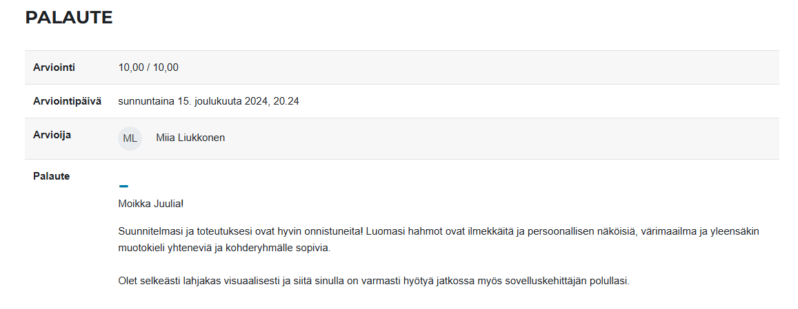

Graafinen suunnittelu
Pelimaailman ja -hahmojen suunnittelu ja toteutus
Tehtävänä oli suunnitella pelin ulkoasu alakouluikäisille lapsille, jossa seikkailevat kaksi hahmoa: pieni ja viisas Kirppu sekä voimakas Härkä. Pelin tavoitteena on kehittää Kirpun viisautta ja Härän voimaa pelaajan vastatessa oikeisiin matemaattisiin kysymyksiin. Jokaisesta oikeasta vastauksesta Kirppu saa lisää painoa ”bodattavakseen”, ja painon karttuessa pelaaja etenee pelissä tasolta toiselle. Itse peli-idea annettiin valmiina.
Hahmojen suunnittelussa halusin korostaa heidän luonteenpiirteitään: Kirppu on pieni, älykäs ja pirteä, varustettuna silmälaseilla ja kirja/vihkolla, kun taas Härkä on lihaksikas, hieman hölmistynyt ja ystävällinen. Värit ja pelin elementit suunniteltiin pirteiksi ja helposti lapsille hahmotettaviksi.

Työskentelin Illustratorilla, joka oli minulle uutta, ja opin käyttämään ohjelman työkaluja haasteiden kautta. Pyrin luomaan hahmoista selkeitä ja värikkäitä, mutta kuitenkin yksinkertaisia ja sarjakuvamaisia. Työn aikana kehitin taitojani tietokoneella piirtämisessä, sillä piirtopöydän sijaan käytössä oli ainoastaan hiiri.
Kaiken kaikkiaan projekti oli innostava ja opettavainen kokemus, joka vahvisti kiinnostustani pelien tekemiseen ja digitaaliseen piirtämiseen.
Jos haluat tarkastella kattavampaa raporttia suunnittelusta ja toteutuksesta kokonaisuudessaan, voit ladata sen alta.
Lataa loppuraportti (PDF)Opettajan palaute
 Takaisin etusivulle